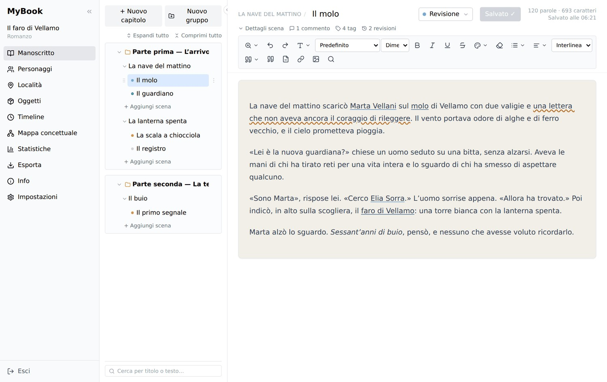
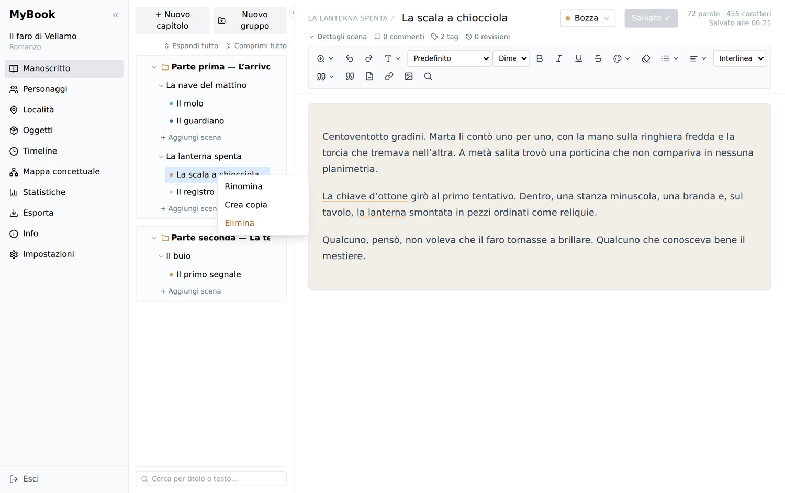
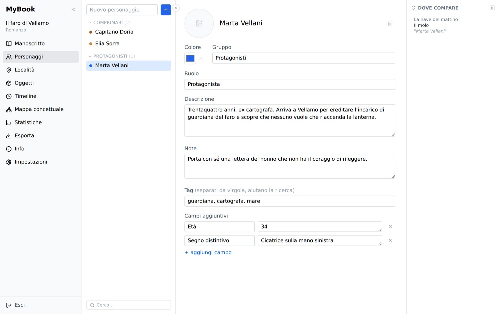
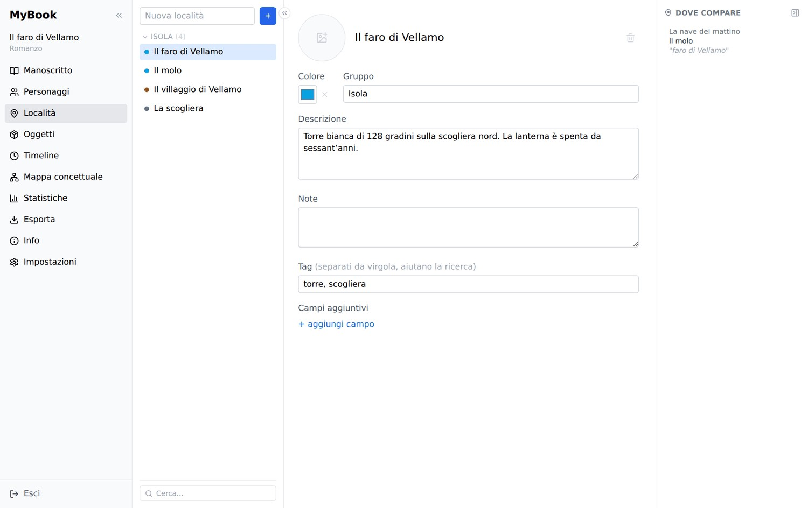
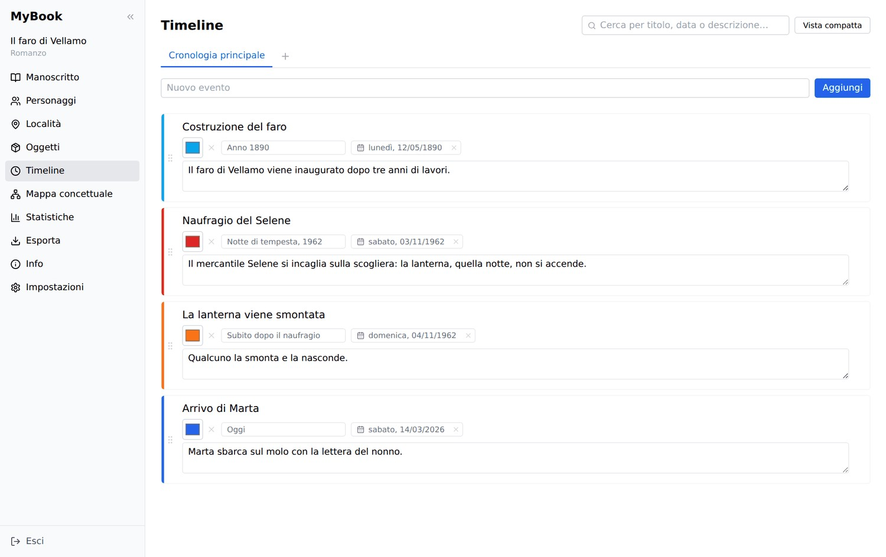
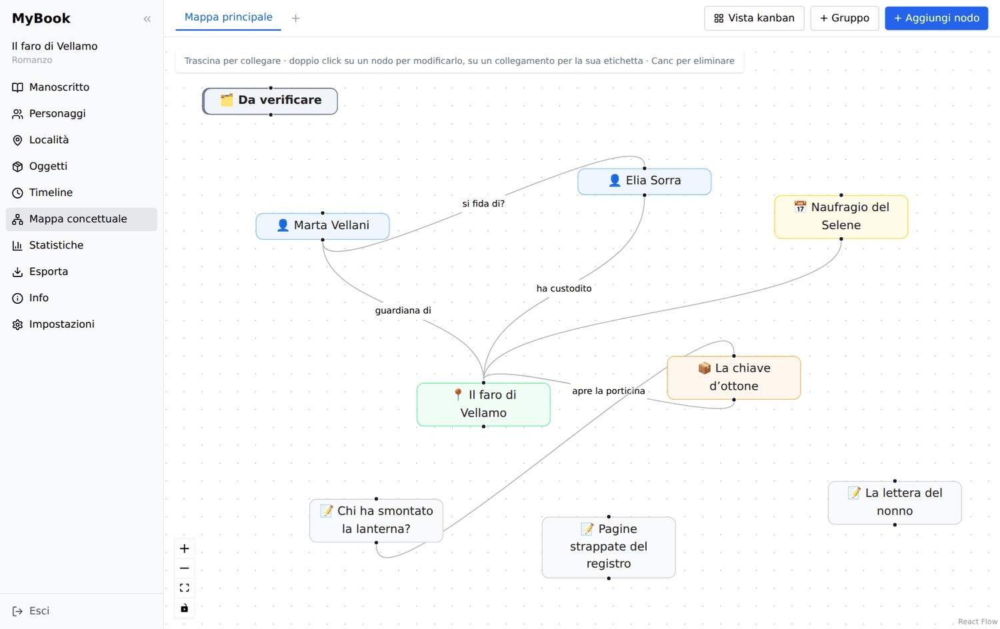
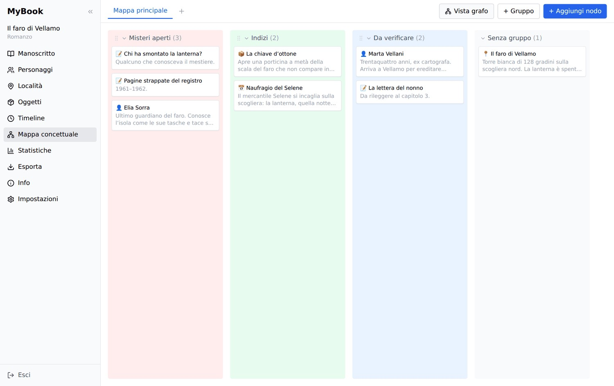
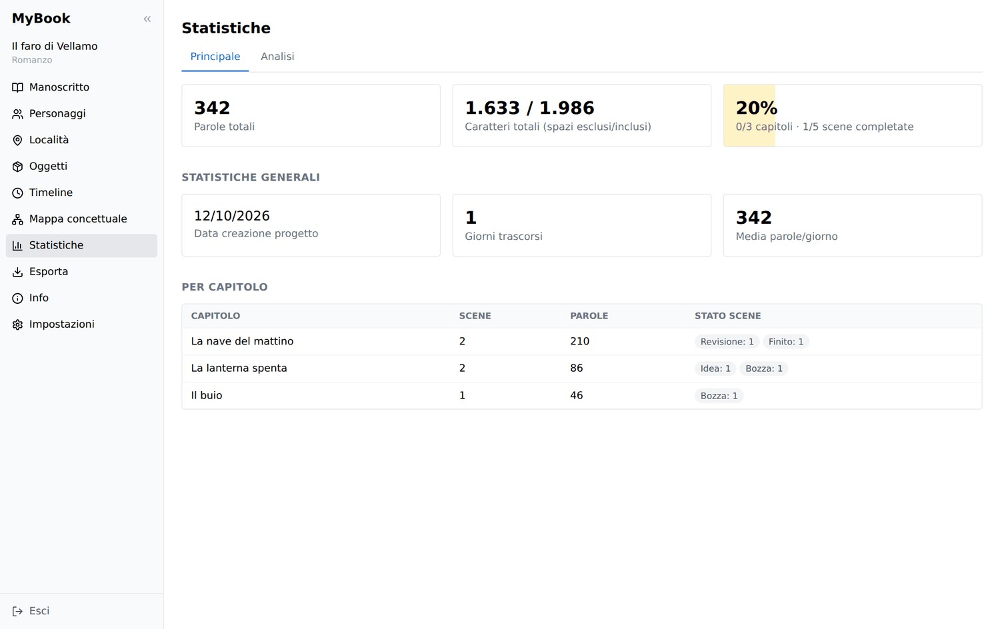
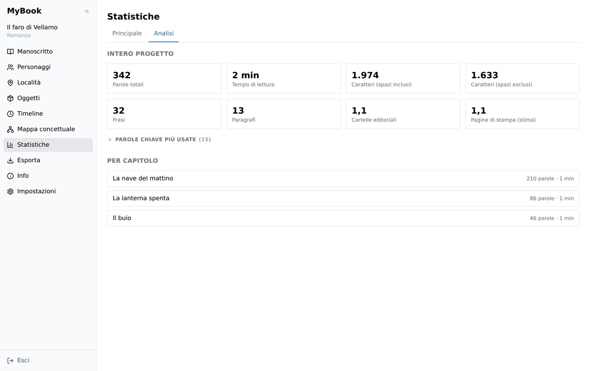

✎
Manoscritto strutturato
Organizza il romanzo in gruppi, capitoli e scene. Riordina con drag & drop, duplica parti e assegna a ogni scena uno stato: idea, bozza, revisione o completata.
MyBook è l'applicazione desktop pensata per chi scrive narrativa. Un unico spazio per il manoscritto, i personaggi, i luoghi, la cronologia degli eventi e tutti i dettagli che rendono coerente un mondo immaginario.

MyBook accompagna il lavoro narrativo dall'idea alla revisione. Ogni strumento è collegato agli altri, così puoi concentrarti sulla storia senza perdere di vista i dettagli.
Organizza il romanzo in gruppi, capitoli e scene. Riordina con drag & drop, duplica parti e assegna a ogni scena uno stato: idea, bozza, revisione o completata.
Formattazione, titoli, elenchi, citazioni, immagini, link e separatori. Lo strumento Dialoghi inserisce caporali, virgolette e lineette con il cursore già pronto.
Trova e sostituisci nella scena, evidenzia le occorrenze, cerca parole intere o distinguendo maiuscole e minuscole. Scorciatoie configurabili e correttore ortografico.
Crea schede con immagini e campi personalizzati. I tag nel testo collegano le schede ai punti esatti di capitoli e scene.
Registra gli eventi con una data narrativa libera — per esempio “Anno 1200” — e, se serve, una data di calendario. Cerca e ordina gli avvenimenti.
Collega personaggi, luoghi, oggetti e capitoli in una mappa visiva. Rendi visibili le relazioni che tengono insieme il tuo universo narrativo.
Ogni scena conserva revisioni immutabili. Confronta le versioni e ripristina una precedente senza cancellare la cronologia successiva.
Monitora parole, caratteri, scene completate, ritmo di scrittura, frasi, paragrafi, tempo di lettura e parole chiave più usate.
Rivedi le operazioni del progetto e lasciati una nota To Do quando lo chiudi. Al prossimo avvio ritrovi un breve riepilogo per ripartire.
MyBook tiene in relazione gli elementi del progetto, così puoi passare dal testo alle informazioni che lo supportano:
Una selezione di schermate autentiche tratte dal manuale ufficiale. Le immagini mostrano il progetto dimostrativo «Il faro di Vellamo» con l'interfaccia in italiano.








Schermate originali dell'applicazione, tratte dal manuale d'uso.
Quando è il momento di condividere, archiviare o continuare a lavorare altrove, puoi esportare il testo o trasferire l'intero progetto.
Genera una copia leggibile e condivisibile del testo nei formati più comuni.
Esporta o importa il progetto completo come singolo file .mybook.json, duplica un progetto e pianifica backup automatici del database.
MyBook è un'applicazione desktop offline-first. I contenuti vengono conservati in un database SQLite locale: non serve creare un account e non occorre un servizio cloud per scrivere e organizzare i tuoi progetti.
MyBook è distribuito con licenza GNU GPL v3. Puoi consultare il codice, leggere il manuale incluso nell'app e contribuire allo sviluppo.
Esplora il progetto, scopri il manuale e segui lo sviluppo di un ambiente di scrittura pensato per la narrativa.
Scarica MyBook ↓ Tutte le release ↗